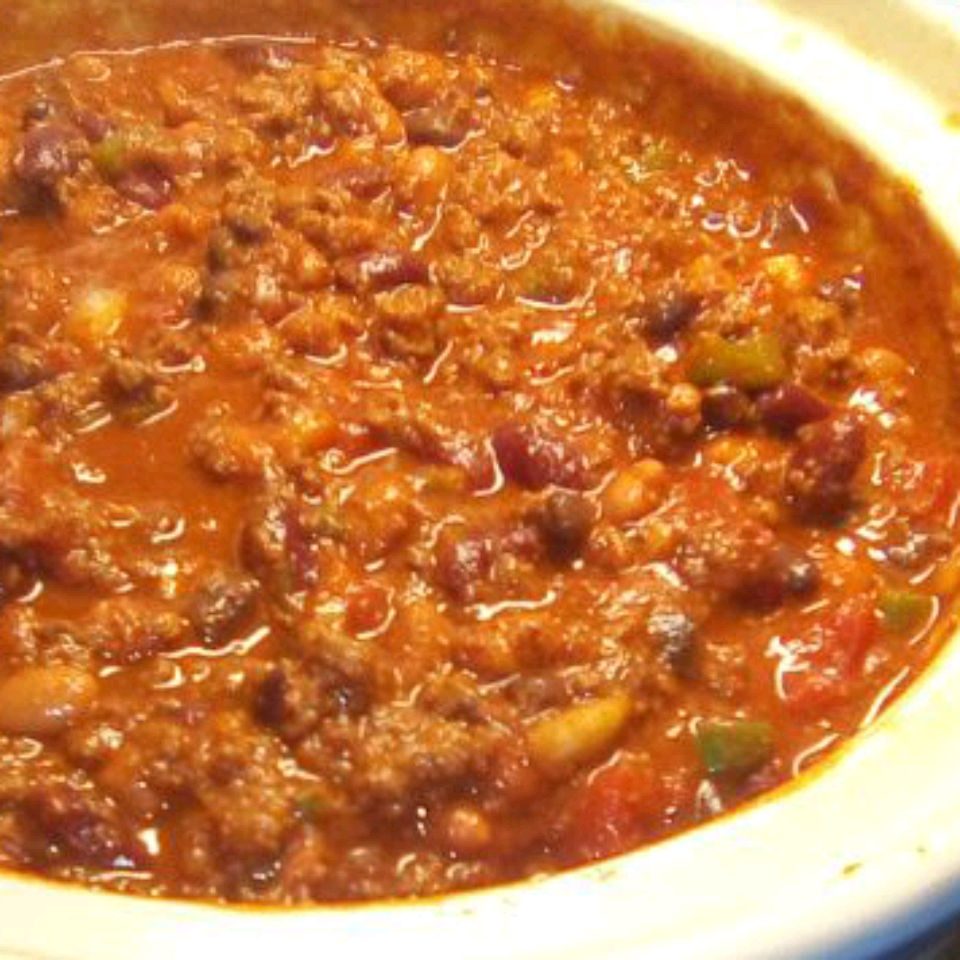

Chili George

Description
This beef chili recipe with tomato juice and beans can be made on the stove or in the slow cooker. It's quick, easy, and so good.
Transfer browned ground beef into a slow cooker; stir in tomato juice, tomato sauce, kidney beans, pinto beans, onions, bell pepper, chili powder, cumin, salt, sugar, oregano, ground black pepper, and cayenne pepper. Cover and cook on Low for 8 to 10 hours.
Ingredients
- 2 pounds lean ground beef
- 1 can tomato juice
- 1 can tomato sauce
- 1 can kidney beans
- 1 can pinto beans
- 2 cups chopped onion
- 1/4 cup chili powder
- 1 teaspoon ground cumin
- 1 teaspoon salt
- 1/2 teaspoon white sugar
- 1/2 teaspoon dried oregano
- 1/2 teaspoon ground black pepper
- 1/8 teaspoon ground cayenne pepper
Steps
- Heat a large skillet over medium-high heat. Cook and stir ground beef in the hot skillet until browned and crumbly, 5 to 7 minutes. Drain and discard grease.
- Transfer browned beef into a large pot over medium heat; stir in tomato juice, tomato sauce, kidney beans, pinto beans, onions, bell pepper, chili powder, cumin, salt, sugar, oregano, ground black pepper, and cayenne pepper. Bring to a boil; reduce heat to low and simmer for 1 1/2 hours.